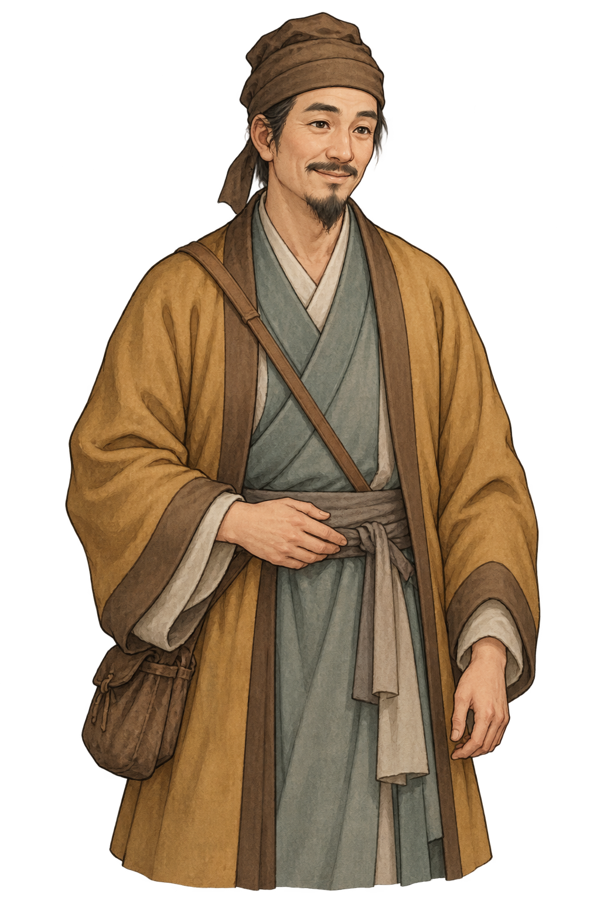

<!doctype html><html lang="zh-CN"><meta charset="utf-8"><meta name="viewport" content="width=device-width,initial-scale=1"><title>行商画风校准 V58</title><style>*{box-sizing:border-box}body{margin:0;background:#eee4d0;color:#4b382b;font-family:system-ui,sans-serif}main{max-width:1250px;padding:24px;margin:auto}h1{font-family:serif;font-weight:500}p{line-height:1.8}#compare{display:grid;grid-template-columns:1fr 1fr;gap:20px}figure{margin:0;background:#d6c8af;text-align:center;border:1px solid #baa17c}figure img{height:600px;max-width:100%;object-fit:contain}figcaption{padding:12px;background:#f6edda}#scene{margin-top:24px;aspect-ratio:16/9;position:relative;overflow:hidden;background:url('../../assets/scenes-v41/counter.png') center/100% 100%}#scene img{position:absolute;left:44%;top:6%;width:28%;height:74%;object-fit:contain}#front{position:absolute;inset:55.8% 0 0;background:url('../../assets/scenes-v41/counter.png') center bottom/100% auto}button{padding:10px 20px;background:#8e5139;color:#fff1d5;border:0;cursor:pointer}a{color:#8e5139}@media(max-width:650px){main{padding:12px}figure img{height:350px}#compare{gap:8px}}</style><main><h1>行商 · 新画风校准 V58</h1><p>保留布帽、长脸、短须、赭袍与灰青内衫，减少纹理，强化眉眼和大色块。本页是风格评审稿，尚未作为最终视觉母版。</p><section id="compare"><figure><figcaption>旧版：细纹较多、写实塑形</figcaption></figure><figure><figcaption>新版：归纳色块、清楚勾线、精明神态</figcaption></figure></section><h2>柜台实际显示</h2><button id="toggle">查看旧版柜台效果</button><div id="scene"><div id="front"></div></div><p><a href="REVIEW.md">审查与生成记录</a></p></main><script>let old=false;document.getElementById('toggle').onclick=()=>{old=!old;document.getElementById('actor').src=old?'previous.png':'merchant.png';document.getElementById('toggle').textContent=old?'查看新版柜台效果':'查看旧版柜台效果';};</script></html>
